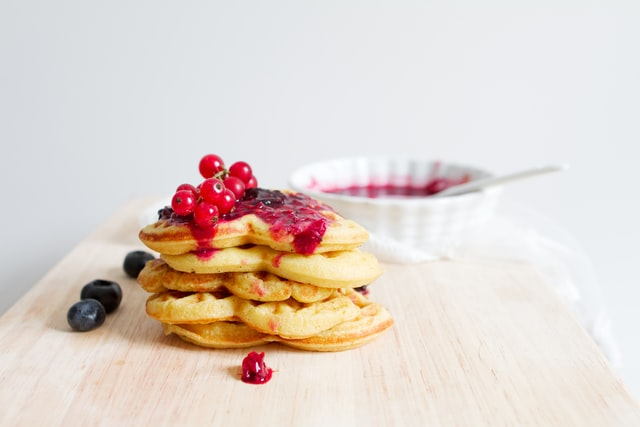
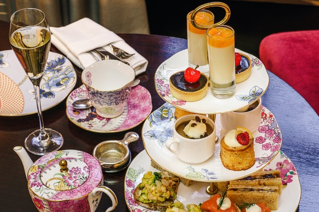

Discussion
Valentine's Day is my favorite holiday, and I use it as an opportunity to express my admiration to those close to me.
Recipes
-
Pancakes or waffles

Making pancakes or waffles is probably one of the easiest methods of incentivizing my appreciation toward the chef. I am personally fine with just layering pancakes/waffles with butter and topping with maple syrup, but I feel they can be adjusted to fit what you would prefer.
I found a Nestlé recipe for pancakes in the shape of hearts.
-
Tea

I love going to tea with my family, and I think all the food and tea that can be assorted in such an aesthetically pleasing manner make for a beautiful brunch item.
BBC Good Food compiled a recipe list of potential tea accompaniments. It includes scones, sandwiches, cakes, and more.